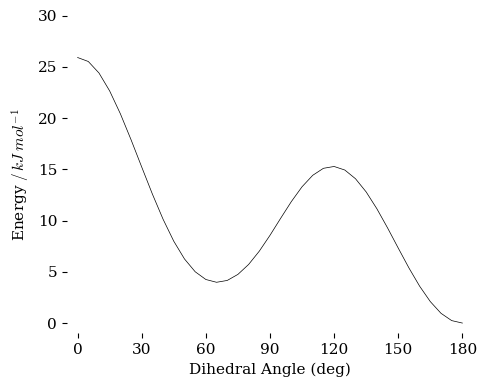
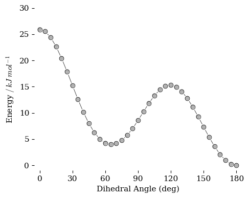

Visualizing the Rotational Profile of Butane#
We can use the data produced in the scan of bond angles from the previous notebook. There we set the central torsional angle to some value and optimized the structure for that angle. the energies for each angle were collected in a csv file along with the angle and optimized structure. We can now use the data, stored in a csv file, to interpret the results. Do not run the calculation again unless you have some time to spare.
Setup#
Below we set the information to access the files. use the same basename and runname as you used to generate the data in the previous notebook.
# Initial Information
basename = "butane_scan"
runname = "hf-631G-previous"
Plot the Data#
The plot below presents the relative energies of the optimized structure against the corresponding central torsional angle.

Plot the Data Again#
The plot below presents the relative energies of the optimized structure against the corresponding central torsional angle. The style is different and this is the version used in the textbook.

Collect the Structures#
Here we collect the structures from the data set put them in an array to be used in an interactive display below.
14
C -0.000015599082 1.012191901279 -1.256787868624
C -0.000015599082 1.012191901279 0.274639823584
C -0.000015599082 -0.374274372988 0.979804582632
C -0.000006828039 -1.611703957402 0.077798377789
H -0.016420146261 2.033401392018 -1.625567356702
H -0.868397294514 0.505357997301 -1.664344092417
H 0.884581465290 0.533442330683 -1.663915998776
H 0.863728505020 1.577846820410 0.611951055703
H -0.865848499525 1.575845838356 0.610045673475
H 0.865781128175 -0.435966008778 1.632788923981
H -0.863663826540 -0.435265072839 1.635712428310
H -0.879969219735 -1.654441084327 -0.555541952514
H 0.873372737058 -1.645940111424 -0.564909424363
H 0.007473658108 -2.511569478952 0.685351992658
Visualize the Structures#
Below is code that will produce an image of the structure using the \(xyz\) cartessian coordinates and present them in an interactive display that includes an image of the structure, the relative energy and the torsional angle. Move the slider and see how energy relates to structure.
Note
This will work only if you run the code in a Jupyter notebook. It does not use html and can’t be displayed as a static object. If you are running this code yourself, the initial output of the display may be an error message. Move the slider and the widget will start working (at least that’s how it works with my computer).